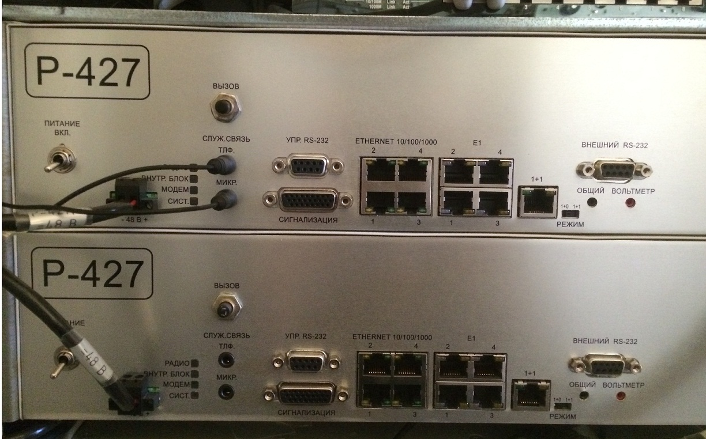
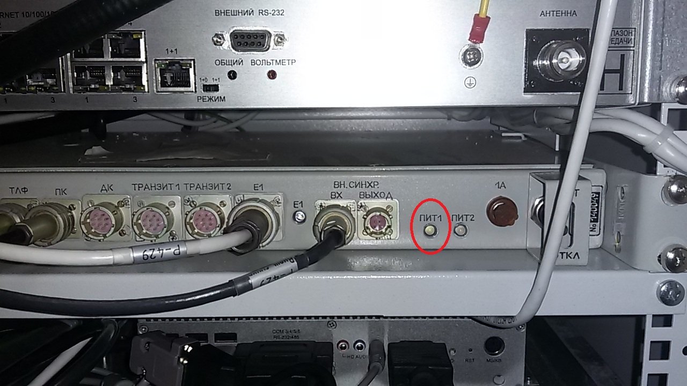

Модернизированная радиорелейная станция Р-409МБ1
Описание радиостанции
Предназначение
Радиорелейная станция Р-409МБ1 предназначена для организации радиорелейных, волоконно-оптических и проводных линий связи, радиодоступа подвижных абонентов, а также развертывания сетей передачи данных, видеоконференцсвязи, автоматической телефонной и громкоговорящей открытой и засекреченной связи на полевых пунктах управления Вооруженных Сил тактического звена управления.
Станция Р-409МБ1 обеспечивает
- функционирование АРМ оператора и АРМ телефониста;
- организацию 2 цифровых радиорелейных линий связи с использованием радиорелейных станций Р-429 в диапазоне 350 МГц и Р-427 в диапазоне 1,4 ГГц;
- организацию 2 волоконно-оптических линий связи уровня STM-1 с использованием мультиплексора синхронного доступа СМД-с по одномодовому оптоволоконному кабелю;
- организацию цифровой системы передачи (далее – ЦСП) с использованием модема Мегатранс-3М, обеспечивающего дуплексную передачу информации со скоростью до 2048 кбит/с (интерфейсы Е1 и Ethernet 10/100 BaseT) по двум парам кабеля П-296 длиной до 25 км;
- организацию 4 ЦСП с использованием модема Орион-3, обеспечивающего дуплексную передачу информации со скоростью до 5632 кбит/с (интерфейсы 4хЕ1 и Ethernet 10/100 BaseT) по одной паре кабеля П-296 длиной до 10 км;
- организацию 2 SDSLЦСП с использованием мультиплексора синхронного доступа СМД-с, обеспечивающего дуплексную передачу информации со скоростью до 2048 кбит/с по одной паре кабеля П-274М длиной до 2 км;
- формирование 42 цифровых потоков Е1 и 30 каналов Ethernet;
- мультиплексирование / демультиплексирование образованных цифровых потоков Е1 в абонентские интерфейсы емкостью 8 каналов ТЧ, 4 канала С1-И, 4 канала ТЧ (МБ), 4 линии FXS (АК);
- конвертирование 4 сигналов Е1 в Ethernet 10/100BaseTи обратно;
- функционирование локальной сети радиодоступа подвижных абонентов (до 5 абонентов) с обеспечением доступа в сеть связи общего пользования;
- развертывание с использованием комплекса мобильного телекоммуникационного МТК-240Б засекреченных сетей передачи данных и видеоконференцсвязи, а также сети автоматической телефонной связи емкостью до 16 аналоговых абонентских линий;
- развертывание открытых сетей передачи данных и видеоконференцсвязи, а также сети автоматической телефонной связи с использованием АТСЭ ФММ емкостью до 20 аналоговых абонентских линий, в том числе 12 линий через систему абонентского уплотнения Ф4/12, 8 линий МБ и 4 линий FXS;
- развертывание с использованием оборудования громкой связи БС-1 и БГС сети громкоговорящей связи емкостью до 20 оконечных абонентских установок и возможностью объединения ее с другими сетями ГГС по 10 каналам ТЧ;
- обслуживание абонентов по заказной системе с использованием АРМ телефониста;
- кросс-коммутацию на уровне ОЦК и каналов Е1;
- коммутацию трафика Ethernet с функциями маршрутизации;
- ручную коммутацию каналов с возможностью их вывода на кабельные вводы;
- организацию служебной связи по внутриузловым соединительным линиям и образованным каналам связи;
- юстировку антенн радиорелейных станций по азимуту с использованием ручного антенно-поворотного устройства;
- развертывание периметровой охранной сигнализации на 5 секторов охраны;
- техническое сопряжение с аналоговыми и цифровыми каналами связи полевых узлов связи различной принадлежности, стационарных узлов связи Вооруженных Сил и сети электросвязи общего пользования.
Сравнительная характеристика радиорелейных станций Р-409МА и Р-409МБ1
| Технические характеристики | Р-409МА (СССР) | Р-409МБ1 |
|---|---|---|
| Радиорелейное направление связи | 2 (аналоговых) в диапазоне 60-480 МГц | 4 (цифровых) в диапазонах Р-427: 1427-1463 + 1362-1392 МГц; Р-429: 240-480 МГц |
| Кабельная линия связи | 2 (аналоговые) | 5 (цифровых) |
| Волоконно-оптическая линия связи | нет | 2 (цифровыe) |
| Транкинговая связь | нет | 1 (ретранслятор) + 5 (абонентов) |
| Канал тональной частоты | 12 | 12 |
| Канал стыка С1-И | нет | 4 |
| Поток Е1 | нет | 43 (по 2 Мбит/с) |
| Порт Ethernet | нет | 31 (до 300 Мбит/с) |
| Абонентская емкость АТС открытой связи | нет | 20 АТС + 8 МБ |
| Абонентская емкость АТС засекреченной связи | нет | 16 АТС |
| Сеть громкоговорящей связи | нет | 20 абонентов |
| Передача данных | нет | есть (открытая и ЗАС) |
| Видеоконференцсвязь | нет | есть (ЗАС) |
| Навигационная система (ГСНС) | нет | есть |
| Система периметровой охраны | нет | есть (на 5 секторов) |
| Коммутация каналов (потоков, портов) | ручная (шнуровая) | автоматизированная + ручная |
| Управление | ручное | автоматизированное (2 АРМ) |
| Гарантированное питание от АКБ | нет | не менее 1 ч (всего оборудования) |
| Автоматическое резервирование источников питания | нет | есть |
| Работа АКБ в буферном режиме | нет | есть |
| Агрегаты электропитания | 2 (бензиновых) | 2 (дизельных) |
| Максимальная потребляемая мощность, кВт | 4,0 | 1,8 |
| Система освещения | лампы накаливания | светодиодное |
Тактико-технические характеристики
Условия эксплуатации
Радиорелейная станция Р-409МБ1 обеспечивает надежную работу при температуре окружающего воздуха от минус 40 до плюс 50ºС и относительной влажности воздуха до 98% при температуре 25ºС.
Основные технические характеристики
| Наименование | Количество |
|---|---|
| АРМ оператора | 1 |
| АРМ телефониста | 1 |
| АРМ телефониста переносное | 1 |
| ЦСП (STM-1), ВОЛС до 30 км | 2 |
| ЦСП (Е1/ Ethernet), КЛС до 25 км | 2 |
| ЦСП (2Е1/ Ethernet), КЛС до 10 км | 2 |
| ЦСП (Е1), КЛС до 5 км | 2 |
| каналов Е1 12 | 28 |
| Ethernet | 10 |
| 4-х пр. КТЧ с ТВ | 14 |
| 2-х пр. КТЧ с ИВ | 4 |
| канал С1-И | 4 |
| 2-х пр. СЛ (FXО/FXS) | 4 |
Электропитание
- промышленная сеть 230В, 50 Гц;
- аккумуляторная батарея (в течение 1 часа);
- два дизельных электрогенератора по 5 кВт.
Потребляемая мощность – 2,2 кВт.
Достоинства
Благодаря применению перспективных телекоммуникационных технологий и современной элементной базы в станции реализованы как функции коммутации каналов, так и функции коммутации пакетов для предоставления перспективных услуг связи "Triple Play" (голос, видео, данные), что обеспечивает широкие эксплуатационные возможности.
Схема организации связи
Работа на радиорелейной станции Р-147
Цифровая радиорелейная станция дециметрового диапазона длин волн предназначена для радиорелейных линий связи с возможностью передачи цифровой информации в дуплексном режиме в диапазоне частот - от 1,362 до 1,462 ГГц со скоростями передачи информации по основному потоку от 0,7 до 43,0 Мбит/c.
Для передачи данных в Р-427 используется интерфейсы Gigabit Ethernet и E1 G.703, обеспечивающие суммарную скорость передачи информации о радиоканалу до 43,0 Мбит/c с шириной полосы пропускания до 8,0 МГц и QAM модуляции различного уровня (от 4QAM до 128QAM).
В Р-427 применены функции предварительной коррекции ошибок(ПКО) и адаптивного кодирования и модуляции (АКиМ), которые позволяют производить адаптацию работы станции к конкретным условиям распространения радиоволн.
Основные ТТД Р-147
- Диапазон рабочих частот, МГц:
- для исполнения «Н»: 1362-1398, 1427-1463;
- для исполнения «В»: 1427-1463, 1362-1398;
- скорость передачи данных в радиоканале, от 0,7 до 43,0 Мбит/c;
- интерфейсы
- E1(G.803) – 4 порта;
- Ethernet10/100/1000Base-T (IEEE 802.3) – 4 порта;
-
типы и характеристики применяемых антенн:
-
Параболическая антенна решетчатого типа:
- диаметр 0,6 м;
- вес 6,5 кг;
- коэффициент усиления 16,1 дБ;
- ширина диаграммы направленности 24,3º;
- параболическая антенна решетчатого типа:
- диаметр 0,9 м;
- вес 10,0 кг;
- коэффициент усиления 19,6 дБ;
- ширина диаграммы направленности 16,2º;
- Антенна волново1 канал в обтекателе:
- длина 1,3 м;
- вес 2,8 кг;
- коэффициент усиления 16,1 дБ;
- ширина диаграммы направленности 30º;
- протяженность интервала при условии прямой видимости, не менее, км:
- 60 (при скорости до 2 Мбит/с);
- 45 (при скорости до 4 Мбит/с);
- 35 (при скорости до 8 Мбит/с);
- 25 (при скорости до 16 Мбит/с);
- 15 (при скорости до Мбит/с);
-
Параболическая антенна решетчатого типа:
Меры безопасности при работе на станции
Общие меры безопасности.К работе с радиорелейным оборудованием допускаются лица, изучившие принцип работы Р-427 и настоящее руководство по эксплуатации.
- Во время работы должны быть предприняты все необходимые меры по снижению риска поражения электрическим током.
- При работе с антенным устройствами необходимо использовать защитные приспособления. Для исключения случаем падения антенных устройств использовать только элементы крепления, поставляемые с ними в комплекте.
- Радиорелейное оборудование Р-427 соответствует требованиям защиты от поражения электрическом током.
- Перед подключением кабеля питания радиорелейное оборудование должно быть заземлено.
- Для снижения риска поражения электрическим током запрещается использовать кабель питания с поврежденной изоляцией.
Запрещается!!! производить подключение или отключение антенно-фидерного тракта при включенном питании приемопередающего устройства изоляций.
Порядок подключения радиорелейной станции Р-409МБ1
- подключить станции к внешней сети переменного тока;
- заземлить станцию
- подключить сетевой кабель к разъему "220" на блоке ввода и вывода кузова станции; при подаче напряжения 220 В частотой 50 Гц на разъем "220" блока ввода и вывода кузова должна загореться лампа СЕТЬ ВКЛЮЧЕНА на щите с автоматической защитой кузова, сигнализирующая о наличии напряжения 220 В частотой 50 Гц;
- установить на щите с автоматической защитой ручку автомата во включенное положение; при этом должна загореться лампа "АВТОМАТ ВКЛЮЧЕН", а на блоке Б13 - лампа "СЕТЬ", сигнализирующая о наличии напряжения 220 В частоты 50 Гц;
- установить на блоке Б13 переключатель "ИСТОЧНИК ПИТАНИЯ" в положении "СЕТЬ";
- нажать на щите с автоматической защитой кнопку "ПРОВЕРКА АВТОМАТА "; При этом автомат должен сработать и отключить напряжение 220 В;
Порядок подготовки к работе:
- надежно закрепить антенное устройство на трубостойке (мачтовом устройстве);
- соединить антенное устройство с приемопередающим устройством с помощью кабеля (кабелей) снижения;
- обеспечить питание приемопередающего устройства, используя соответствующие источники питания постоянного тока минус 48 В, 2 А и кабель питания из комплекта поставки;
- перед включением Р-427 произвести ее внешний осмотр. Обнаруженные неисправности устранить. Проверить правильность и надежность подключения кабелей;
- переключатель "ПИТАНИЕ" приемопередающего устройства установить в положение ВКЛ., после чего индикатор ""СИСТ." заморгает зеленым цветом;
- после загрузки внутренней программы приемопередающего устройства (примерно через 30-40 с) загорятся индикаторы: "РАДИО", "ВНУТР.БЛОК", "МОДЕМ", а индикатор "СИСТ." перестанет моргать. Радиорелейная станция готова к работе;
- по окончании работы переключатель "ПИТАНИЕ" приемопередающего устройства установить в положение "ВЫКЛ";
Порядок подключение Р-427 к компьютеру:
- компьютер должен быть оснащен сетевой картой (разъем RJ-45), либо портом RS232(с разъемом DB-9), а так же иметь установленный интернет-браузер (при использовании сетевой карты Ethernet), или стандартный "Hyper Terminal" (при использовании порта RS232);
- соединить интерфейсным LAN-кабелем из комплекта поставки разъема сетевой карты компьютера RJ-45 с любым из портов "ETHERNET 10/100/1000" приемопередающего устройства. При отсутствии в компьютере сетевой карты, соединить кабелем разъем COM (DB-9) компьютера с разъемом "УПР. RS-232" приемопередающего устройства (кабель в комплект поставки не входит);
Порядок работы с радиорелейной станцией Р-427 описан в Руководстве оператора СУИК.464425.001 РЭ1.
Порядок настройки антенны на компьютере.
Для дальнейшей настройки антенны Р-427 использовать компьютер:
- включить интернет-браузер (Google Chrome);
- в адресной строке ввести:
- для исполнения "Н" - 192.168.205.10
- для исполнения "В" - 192.168.205.11
- в строке "имя пользователя" ввести admin;
- в строке "пароль" ввести changeme;
- в появившемся окне "Конфигурация радиорелейной станции" нажать "ДАЛЕЕ";
- в появившемся окне "Конфигурация IP-адреса" нажать "ДАЛЕЕ";
- в появившемся окне "Конфигурация модема и ППУ" ввести:
- значение ширины радиоканала;
- тип модуляции;
- выбрать необходимые потоки E1;
- значение мощности передатчика;
- значение частоты передатчика;
- в появившемся окне "Проверка параметров" убедиться в правильности заданных параметров. Далее нажать кнопку "ПРИМЕНИТЬ";
- в появившемся окне "Основное состояние" убедиться в уровне сигнала на входе приемника удаленной и местной станции;
- подключить микротелефонную гарнитуру в разъемы указанные на рисунке; 
- переговорить с удаленным абонентом;
Порядок юстировки антенных устройств:
Перед проведением юстировки антенных устройств на радиорелейном интервале убедиться в том, что:
- интервал является открытым (пригодным для Р-427) в соответствии с предварительно проведенным расчетом профиля интервала;
- для встречной работы используется приемопередающие устройства исполнений "Н" и "В";
- на обоих приемопередающих устройствах установлена идентичная конфигурация (частоты настройки, достаточная входная мощность передатчиков, вид модуляции, полоса пропускания радиоканала);
- антенные устройства имеют одинаковую поляризацию, кабели снижения исправны и надежно соединены с антенными устройствами и приемопередатчиками;
- питание приемопередатчиков включено;
Юстировка должна выполнятся для каждого антенного устройства последовательно: обе антенны попеременно юстируются по азимуту (по горизонтали) и, при необходимости, по углу места (по вертикали) до момента установления максимальных уровней принимаемого сигнала на обеих сторонах радиорелейного интервала.
Для юстировки антенн должным образом необходимо выполнять следующие шаги:- Подключить вольтметр к разъемам "ОБЩИЙ" и "ВОЛЬТМЕТР", расположенным на передней панели приемопередающего устройства, которое предназначены для измерения напряжения входного сигнала при юстировке антенного устройства. Убедитесь, что вольтметр находится в режиме измерения постоянного напряжения, предел измерения 0...10 В.
- Ослабить крепление антенно-мачтового устройства, используется для обеспечения юстировки антенны по азимуту.
- Выполнить предварительную юстировку антенны по азимуту, направив ее в сторону корреспондента.
- Медленно поворачиваю антенну сначала в одну, затем в другую сторону от предварительного выбранного направления, наблюдая за показаниями вольтметра. Добиться максимальных показаний вольтметра (показаниям вольтметра соответствует значения приемного уровня сигнала. Эту же операцию можно проводить, наблюдая за изменением показаний приемных уровней по внутреннему интерфейсу Р-427 с помощью положении.
- Надежно зафиксировать антенно-мачтовое устройство в найденном положении.
- Юстировка антенны по углу места (только при необходимости) осуществляется путем натяжения или ослабления соответствующих оттяжек мачтового устройства либо с помощью соответствующих регулировок элементов крепления антенны, добиваясь максимальных показаний вольтметра.
- Выполнить шаги 1-6 на обоих концах радиорелейного интервала до тех пор, пока уровни приемного сигнала обоих приемопередатчиков не достигнут максимально возможных значений.
Работа на радиорелейной станции Р-429
Назначение и ТТД радиорелейной станции Р-429
Изделие Р-429 цифровая радиорелейная станция, работающая в диапазоне частот от 238 до 480 МГц и предназначена:
- для передачи цифровой информации с пропускной способностью основного потока E1 (2048 кбит/c). При этом поддерживаются конфигурации систем "1+0" (без резерва) и "1+1" с резервированием ствола;
- для построения беспроводных сетей связи прямой видимости для передачи цифровой информации в дуплексном режиме;
- для эксплуатации в стационарных и подвижных объектах (на колесной транспортной баз) без работ в движении;
Изделие имеет расширенный набор функциональных возможностей:
- автоматическое резервирование стволов по критериям достоверности (BER), уровня приема и аппаратной аварии;
- цифровой канал служебной связи с селективным вызовом;
- дополнительный цифровой канал с программно выбираемым типом интерфейса;
- низкоскоростные цифровые каналы для подключения внешних сигнальных датчиков и исполнительных устройств;
- систему телеуправления и телесигнализации РРЛ;
- встроенные средства тестирования и контроля параметров оборудования;
- ПСО для мониторинга и управления сетью РРЛ;
Порядок подключения радиорелейной станции Р-409МБ1
- подключить станции к внешней сети переменного тока;
- заземлить станцию
- подключить сетевой кабель к разъему "220" на блоке ввода и вывода кузова станции; при подаче напряжения 220 В частотой 50 Гц на разъем "220" блока ввода и вывода кузова должна загореться лампа СЕТЬ ВКЛЮЧЕНА на щите с автоматической защитой кузова, сигнализирующая о наличии напряжения 220 В частотой 50 Гц;
- установить на щите с автоматической защитой ручку автомата во включенное положение; при этом должна загореться лампа "АВТОМАТ ВКЛЮЧЕН", а на блоке Б13 - лампа "СЕТЬ", сигнализирующая о наличии напряжения 220 В частоты 50 Гц;
- установить на блоке Б13 переключатель "ИСТОЧНИК ПИТАНИЯ" в положении "СЕТЬ";
- нажать на щите с автоматической защитой кнопку "ПРОВЕРКА АВТОМАТА "; При этом автомат должен сработать и отключить напряжение 220 В;
Порядок подготовки антенны к работе:
- надежно закрепить антенное устройство на трубостойке (мачтовом устройстве).
- соединить антенное устройство с приемопередающим устройством с помощью кабеля (кабелей) снижения;
- обеспечьте питание приемопередающего устройства, используя соответствующие источники питания постоянного тока;
- перед включением Р-429 произвести ее внешний осмотр. Обнаруженные неисправности устранить. Проверить правильность и надежность подключения кабелей;
- переключатель "ПИТАНИЕ" приемопередающего устройства установить в положение ВКЛ., после чего индикатор ""СИСТ." заморгает зеленым цветом;
- для включения питания антенны Р-429 и компьютера включить тумблеры F7 и F12 на блоке ПС-60/48У статива МК-Д3;
- после загрузки внутренней программы приемопередающего устройства загорятся индикаторы: "ПИТ1"; 
Порядок настройки антенны на компьютере:
- на рабочем столе нажать на ярлык "МАСТЕР 3.0 link";
- в окне, приведенном на рисунке(...), выбрать в выпадающем списке имя учетной записи и ввести пароль. После нажатия кнопки "ВОЙТИ" будет произведена сверка пароля с сохраненным в базе. При их несовпадении ввести пароль заново;
- нажать на функциональной панели на кнопку создать сеть;
- в появившемся окне ввести тип, имя и адрес сети;
- в появившемся окне "СВОЙСТВА СТАНЦИИ" вводим название сети и адрес, в соответствии с номером указанным на блоке МД-1-1Р(последние две цифры номера);
- нажать правой кнопкой мыши на изображении менеджера "МАСТЕРА". В появившемся меню выбрать com-порт, который соединен кабелем с портом ПК на модуле доступа МД-1-1Р, из предложенного списка;
- далее необходимо вызвать контекстное меню ,к которой подключена ПЭВМ. В меню необходимо выбрать подключение по локальному порту;
- для связи двух станций по радиоканалу вызвать контекстное меню, выбрать пункт "связать по радиоканалу".
- для настройки вызвать контекстное меню, выбрать пункт "параметры";
- для изменения частоты и уровня сигнала на передачу, в появившемся окне "ПАРАМЕТРЫ", нажать на кнопку ППУ,
затем управления, ввести нужные значения частоты и уровня сигнала на передачу в соответствующих строках;

- поднять микротелефонную трубку. Переговорить с удаленным абонентом.
Работа с системой "Меготранс-3М"
Назначение и основные ТТД системы "Меготранс-3М".
Система предназначена для передачи цифрового сигнала со скоростью до 2,3 Mбит/с по некоммутируемым неуплотненным физическим кабельным линиям связи (преимущественно по симметричным высокочастотным одно- и многочетверочным кабелям типа ЗКП или МКС по однокабельной или двухкабельной схеме связи). Система может применяться как в составе первичных цифровых систем передачи, цифровые стыки которых отвечают требованиям МСЭ-Т, так и в качестве самостоятельного оборудования (например, для организации цифровых трактов). Аппаратура обеспечивает возможность линейной структуры передачи данных.
Аппаратура MEGATRANS-3M включает в себя станционное оборудование линейного окончания (комплекты головного и оконечного ОУП) и регенерационное оборудование (комплекты для установки в НУП).Линейная скорость интерфейса xDSL достигает величины 2312 Кбит/с (точка-точка без регенераторов), а также до 2056 Кбит/с (с регенераторными модулями).
Станционное оборудование линейного окончания предназначено для образования линейного сигнала из цифровых потоков E1 (G.703), Nx64 (V.35,V.36,X.21,V.28,RS-232) и Ethernet (IEEE 802.3) со скоростью передачи до 2,3 Мбит/с и дистанционного питания промежуточных линейных регенераторов.
Регенерационное оборудование предназначено для регенерации линейного сигнала, устанавливается в необслуживаемых регенерационных (усилительных) пунктах НРП (НУП). В состав оборудования входят контейнер НРП и модули регенератора.
Дистанционное питание регенераторов осуществляется напряжением величиной до200В (ток ДП не более 60 мА). Количество дистанционно питаемых регенераторов до 2-х с каждого оконечного полукомплекта (до 4-х всего в системе при питании с двух узлов).
Мониторинг и управление модулями семейства MEGATRANS-3M осуществляется следующими способами:
- по интерфейсу RS-232 (терминал типа VT-100). Позволяет осуществлять локальное управление (порт Monitor), а также управление удаленными;
- модулями и регенераторами по встроенному служебному каналу (REMO). Данный вид управления предоставляет возможность начальной и тонкой настройки оборудования.
- SNMP в составе сложных сетей с использованием единой системы;
- управления FlexGain View;
Питание станционного оборудования линейного окончания MGS-3M-SRL-E1B/Eth осуществляется от первичного источника постоянного тока с номинальным напряжением -48 или -60В постоянного тока с заземленным «плюсом». Модель MGS-3M-MRL-E1B позволяет, кроме этого, использовать питание 220В, 50 Гц.
Питание линейных регенераторов осуществляется дистанционно от станционного оборудования линейного окончания.
Порядок включения питания системы "Меготранс-3М":
- включения питания системы "Меготранс-3М" и компьютера включить тумблеры F4 и F12 на блоке ПС-60/48У статива МК-Д3;
Порядок работы и настройки системы "Меготранс-3М" на компьютере:
- включить программное обеспечение системы "Меготранс-3М" программу "mgs";
- в основном поле ввести команду "ECHO%01";
- для входа в меню контроля эксплуатационных параметров (Performance Management), в строке ввода команд ввести "1", далее нажать Enter;
- в данном меню можно произвести контроль эксплуатационных параметром xDSL с помощь команды <G826>, контроль эксплуатационных параметров по стыку Е1 с помощью команды <G826 Е1>, а так же настройки текущей даты и времени с помощью команд <DATE [date] [ALL]> и <TIME [time] ALL> соответственно.
- для входа в главное меню ввести в строке команд "М", далее нажать Enter;
- для входа в меню контроля состояния и обслуживания (Fault and maintenance management) в главном меню ввести "2", нажать Enter;
- для изменения соотношения параметра “сигнал/шум” ввести команду <SQ>;
Ввод данной команды запускает трассировку параметра SNR (Signal To Noise Ratio – отношение сигнал/шум) в соответствии со стандартом ITU-T G.991.2. Команда SQ прекращает работу по команде SQ и нажатием на кнопку Enter или же по любой другой команде с надписью Invalid command.
CO_01_FMM>SQ
signal quality trace on
xDSL SNR: local 36.4 dB remote 37.2 dB
xDSL SNR: local 36.4 dB remote 37.2 dB
CO_01_FMM>SQ
signal quality trace off
CO_01_1_FMM>
Для корректного функционирования стыка SHDSL параметр SQ должен быть выше 25 dB. - для контроля рабочих параметров системы ввести команду <STATUS>;
Показывает текущие рабочие параметры системы:
CO_FMM>STATUS
----------------------------------------
Local System Status
----------------------------------------
LOSD : 1
SEGA : 1
PS : 1
SEGD : 1
Tx power : 13.5 dBm
Rx gain : 09.8 dB
Loop attn.: 00.0 dB
SNR : 37.7 dB
Bitrate : 2056 kbit/s
SRU # : 0
ANNEX : A
Ethernet : 100 Mbit/s, full duplex
Address : 05 (RACKADDR)
----------------------------------------
CO_FMM>
Для модулей регенератора выводятся параметры для двух интерфейсов SHDSL.
Так же с помощью команды статус мы можем установить номинальная мощность выходного сигнала [дБм] (Tx power), усиление приемника [дБ] (Rx gain), соотношение "сигнал\шум" [дБ] (SNR) и скорость передачи данных в SHDSL линии [кбит/с] (Bitrate). - для входа в главное меню ввести в строке команд "М", далее нажать Enter;
- для входа в меню конфигураций (Configuration Management) ввести в строке команд главного меню "3", нажать
Enter;

- для просмотра справочной информации в строке команд ввести <H>;
- для просмотра установленной конфигурации модуля ввести команду <CONFIG>.
После ввода этой команды, при изменении конфигураций системы информация о новой конфигурации выводится на экран автоматически; - для переключения режима кадрирования ввести команду <G704>. Команда <G704 ON/OFF> включает/выключает режим кадрирования по ITU-T G.704. В случае установления линейной скорости BASERATE ниже, чем 2056 кбит/с, система автоматически устанавливает режим кадрирования по ITU-T G.704;
- для переключения режима детектирования и генерации CRC4 ввести команду <CRC4>. Команда <CRC4 [ON/OFF]> включает/выключает режим генерации и обработки CRC4. Команда доступна только в режиме кадрирования по G.704;
- для переключения режима генерация бита Е ввести команду<EBIT>. Команда <EBIT ON/OFF> включает/выключает режим генерации бита Е. Команда доступна только при включенном режиме CRC4;
- для управления режимами AIS вводить команды <AISGEN>, <AISDET>. Команда <AISGEN ON/OFF> включает/выключает режим AIS Generation (режим генерации сигнала AIS). Команда <AISDET ON/OFF> включает/выключает режим AIS Detection (режим детектирования сигнала AIS);
- для выбора скорости передачи потока Nx64 ввести команду <BITRATE>. Команда <BITRATE N> устанавливает скорость передачи данных по сетевому стыку Nx64 кбит/с, N=1..36. Для режима V.28 допустимые значения n=1..3;
- для выбора режима MASTER/SLAVE ввести команду <MASTER>. Команда <MASTER ON/OFF> включает режим MASTER/SLAVE. После ввода команды происходит перезагрузка модуля;
- для входа в главное меню ввести в строке команд "М", далее нажать Enter;
- для входа в меню защиты (Security management) ввести в строке команд "4", нажать Enter;
- для входа в главное меню ввести в строке команд "М", далее нажать Enter;
Работа с системой СМД
Назначение и основные ТТД СМД.
Мультиплексор доступа(СМД) предназначен для эксплуатации на сети связи общего пользования в качестве аппаратуры цифровой системы передачи синхронной цифровой иерархии, обеспечивающей передачу сигналов Е12, Е31, Ethernet и сигналов абонентского доступа (АД) в структуре синхронных транспортных модулей уровня STM-1 и STM-4 по одномодовому волоконно-оптическому кабелю.
СМД обеспечивает:
- формирование синхронных транспортных модулей STM-1(155,52 Мбит/с) на восемь направлений передачи по электрическому коаксиальному кабелю или по одномодовому волоконно-оптическому кабелю;
- формирование синхронных транспортных модулей STM-4 (622,08 Мбит/с) на четыре направления передачи по одномодовому волоконно-оптическому кабелю;
- оптические интерфейсы STM-1 и STM-4 - в соответствии с рекомендацией G.957 МСЭ-Т с кодами применения: S-1.1, L-1.1; L-1.2; S-4.1; L-4.1; L-4.2;
- электрические интерфейсы STM-1 - в соответствии с рекомендацией G.703 МСЭ-Т;
- электрические интерфейсы Е12, Е31 – в соответствии с рекомендацией G.703 МСЭ-Т;
- ввод/вывод в транспортные модули STM-1 и STM-4:
- до 63 асинхронных/синхронных сигналов Е12 (2048 кбит/с);
- до 9 сигналов Е31 (34368 кбит/с);
- до 84 сигналов Е12 для абонентского доступа;
- до четырех сигналов Ethernet 10/100 Base-TX со скоростью трафика Ethernet от 1 до 42 VC-12 (VCAT) (от 2176 до 91392 кбит/с);
- ввод/вывод сигналов абонентского доступа: SDSL, ТЧ, АК, АК-4ПР, АК-МБ, СК, СК-4ПР, КС, ТК, ОЦК, V36/X21, RS, С1-И, МСД, КЛС с коммутацией на уровне КИ сигнала Е12 (64 кбит/с);
- полнодоступную неблокируемую коммутацию сигналов на уровне VC-12, VC-3 и VC-4 в режимах коммутации: однонаправленной, двунаправленной, вещания (VC-12 Ethernet, кроме вещания);
- до 1638 кроссовых переключений на уровне VC-12;
- до 316 кроссовых переключений Е12 на уровне КИ (64 кбит/с);
- синхронизацию:
- от внутреннего генератора (Т0);
- от любого входного сигнала STM-1, STM-4 (T1);
- от любого входного сигнала Е12, кроме входных сигналов Е12 блоков абонентского доступа, и Е31 (Т2);
- от источника внешней синхронизации 2048 кбит/с или 2048 кГц (Т3);
- выходной сигнал тактовой синхронизации (Т4) с параметрами в соответствии с рекомендацией G.703 МСЭ-Т;
- автоматический переход от одного источника синхронизации к другому путем применения приоритетных списков синхронизации и механизма сообщений о статусе синхронизации (SSM);
- автоматическое резервирование мультиплексорных секций (MSP) – в соответствии с рекомендацией G.841 МСЭ-Т;
- автоматическое резервирование соединений подсети на уровне VC-12, VC-3, VC-4 (SNCP) в соответствии с рекомендацией G.841 МСЭ-Т);
- аппаратное резервирование блоков по схеме 1+1 (СP - Саrd Protection).;
- мониторинг аварийных сообщений и рабочих характеристик и отображение их аппаратными и программными средствами;
- организацию служебной связи по каналу с двухпроводным абонентским окончанием с возможностью индивидуального вызова абонента, вызова группы абонентов и работы в режиме конференц-связи;
- Контроль и управление внешними устройствами.
Работа на мультиплексоре СМД
Создать схему сети согласно рисунку
Для того, чтобы войти в систему управления, пользователь должен пройти процедуру регистрации. В открывшемся окне необходимо ввести имя, под которым пользователь зарегистрирован в системе управления, и пароль.
Введите:
Имя : SUPERTELПароль : 1234
После заполнения полей необходимо нажать кнопку OK.
Если Вы ввели имя и пароль правильно, в следующем окне будет сказано, что пользователь зарегистрирован
Нажмите кнопку OK – раскроется окно схемы сети.
На коммутационном поле СКМ- Двухпроводным шнуром соединить гнездо “ПРМ“ Р-427 с гнездом “ПРД” КАД, а вторым двухпроводным шнурком гнездо “ПРД” Р-427 с гнездом “ПРМ“ КАД
- Чтобы включить первый порт КАД необходимо в меню расположения сетевого элемента CMD выбрать плату КАД.
- После чего в появившемся окне в пункте “Состояние Е1 портов” выбрать порт 1;
- Далее в появившемся окне “Управление параметрами блока КАД” в пункте Аварии замаскированы выбрать Отображение аварий в окне;
- Далее перейти к настройке прокладываемой линии связи. Для чего выбираем в основном окне приложения “SUPERTEL-NMS” пункт КРОССИРОВКА-Е0 КРОССИРОВКА-РЕДАКТОР Е0 ТРАСС
- Откроется диалоговое окно Редактор Е0 трасс, где ввести следующие параметры:
- Название трассы (текстовое окно): вводится название трассы;
- Тип (кнопка): выбор типа:
источник
получатель; - Группа обслуживания (кнопка): выбор группы обслуживания;
- Начало трассы (поле начала трассы комбинированного окна);
- Сетевой элемент (кнопка): выбор сетевого элемента начала трассы;
- Слот, блок (кнопка)€: выбор слота и блока сетевого элемента начала трассы, в данном случае
выбираем
КАД порт 1;

- Канальный интервал (кнопка-панелька): отражает канальный интервал начала трассы, выбираем КИ 1
- Окончание трассы (поле окончания трассы комбинированного окна);
- Сетевой элемент :выбор сетевого элемента окончания трассы, в данном случае выбираем ТЧ порт1 ;
- Слот, блок (кнопка): выбор слота и блока сетевого элемента окончания трассы;
- Канальный интервал (кнопка-панелька): отражает канальный интервал окончания трассы, для блоков МП-1, МП-2, МП-4 открывает выбор канального интервала окончания трассы;
- +СЭ (кнопка): выбор сетевых элементов, через которые трасса должна проходить • –СЭ (кнопка):
выбор
сетевых элементов, через которые трасса не должна проходить.
Нажатие “Создать трассу” : создает трассу в графическом интерфейсе и открывает окно блокнота, где прописаны параметры созданной трассы. После чего нажать “Ввести в базу данных” : вводит трассу в базу данных, при этом пропадет окно блокнота с параметрами трассы и откроется диалоговое окно ТАБЛИЦА Е0 КРОССОВЫХ СОЕДИНЕНИЙ, в котором будет прописана новая трасса. В столбцах таблицы будет приведено название трассы, количество КИ, название сетевого элемента, блока, номера слота и порта начала трассы, название сетевого элемента, блока, номера слота и порта окончания трассы, тип трассы, группа доступа, направление, состояние трассы.
В столбце «направление» указано, двунаправленная или однонаправленная трасса:
Д - двунаправленная трасса;
Ш - однонаправленная широковещательная трасса.
- Далее двухпроводным шнуром соединить гнездо “ПРМ“ БГС с гнездом “ПРД” ТЧ, а вторым двухпроводным шнурком гнездо “ПРД” БГС с гнездом “ПРМ“ ТЧ ;